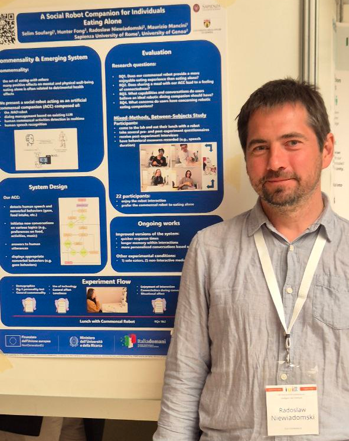

Publications
A Social Robot Companion for Individuals Eating Alone
Authors: Selim Soufargi, Hunter Fong, Radoslaw Niewiadomski, Maurizio Mancini
Conference: 30th Annual ACM Conference on Intelligent User Interfaces (IUI), March 24-27, 2025, Cagliari, Italy
Automatic Recognition of Commensal Activities in Co-located and Online settings
Authors: Yazgi, K., Beyan, C., Mancini, M., Niewiadomski, R.
Conference: ICMI Companion 2024, November 4–8, 2024, San Jose, Costa Rica
Do We Need Artificial Dining Companions? Exploring Human Attitudes Toward Robots in Commensality Settings
Authors: Hoxha, A., Fong, H., Niewiadomski, R.
Conference: ICMI Companion 2024, November 4–8, San Jose, Costa Rica
Sounding bodies: Exploring sonification to promote physical contact
Authors: Chiara Gulino, Radoslaw Niewiadomski
Conference: AVI2024, Genova
Multimodal interactive VR mindfulness experience
Authors: Maurizio Mancini, Radoslaw Niewiadomski, Giovanna Varni, Andrea Chirico, Tommaso Palombi, Fabio Alivernini, Fabio Lucidi
Conference: AVI2024, Genova
First Multimodal Banquet: Exploring Innovative Technology for Commensality and Human-Food Interaction (CoFI2024)
Authors: Niewiadomski, R., Altarriba Bertran, F., Dawes, C., Obrist, M., Mancini, M.
Conference: ICMI '24, November 4–8, 2024, San Jose, Costa Rica
A Virtual Agent as a Commensal Companion
Authors: Mancini, M., Niewiadomski, R., De Lucia, G., Longobardi, F.M.
Conference: IVA ’24, September 16–19, 2024, Glasgow, United Kingdom
How Do We Perceive the Intensity of Facial Expressions? The PIFE Dataset for Analysis of Perceived Intensity
Authors: Tiuleneva M., Castano E., Niewiadomski, R.
Conference: ACII 2024, September 15–18, Glasgow, UK